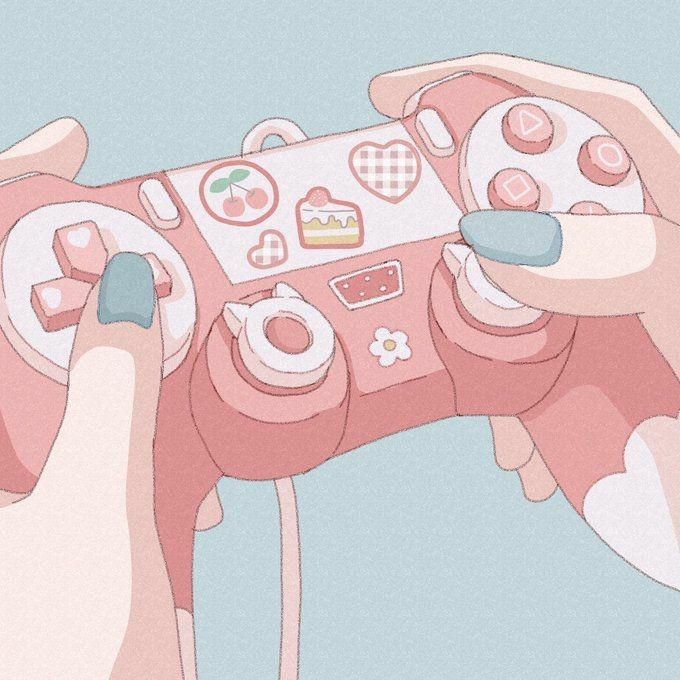

ü§çHere you will find all the blog posts to dateü§ç
 Equality among peers
Equality among peers
 How to limit stress
How to limit stress
 Managing time
Managing time
 Ways to unwind
Ways to unwind

Famous Women in STEM
 Building a Network
Building a Network
 Mistakes and Setbacks
Mistakes and Setbacks
 Success Stories
Success Stories
 Beginner Projects
Beginner Projects
Future Prospects
A day for Sri Pradeepta
 A day for Nasteho
A day for Nasteho
A Day for Tayyeba
A day for Rezuan
A day for Mehnaz

Equality among peers
Addressing the gender gap in STEM fields is crucial for fostering equality and inclusivity. Research consistently highlights disparities in gender representation and pay gaps, underscoring the need for awareness and action. Organizations dedicated to promoting gender equality and diversity in STEM, such as Go Girl Organization and Code First Girls, play pivotal roles in challenging biases and striving for equal opportunities.
Katherine Johnson, a pioneering African American mathematician, made significant contributions to NASA's space program during the 1960s. Overcoming systemic racial and gender discrimination, Johnson played a crucial role in calculating trajectories for historic missions, including the first American in space and the Apollo 11 moon landing. Her remarkable achievements not only broke barriers in the male-dominated field of aerospace engineering but also served as an inspiration for future generations, highlighting the resilience and brilliance of women in STEM despite the challenges they faced.
Ada Lovelace, often regarded as the world's first computer programmer, made groundbreaking contributions to the field of computing in the 19th century. Collaborating with Charles Babbage, she developed the first algorithm intended for implementation on Babbage's Analytical Engine, a theoretical mechanical general-purpose computer. Lovelace's visionary insights not only laid the foundation for future advancements in computer programming but also established her as a pioneer in STEM, leaving an outstanding impact on the evolution of technology and paving the way for generations of women in computing.

How to limit stress
Navigating STEM subjects can be inherently challenging, often giving rise to academic stress that impacts both mental health and physical well-being. The rigorous demands of these fields can manifest as irritability, anxiety, insomnia, difficulty concentrating, fatigue, constant worry, and memory issues, underscoring the importance of recognizing and addressing stress in STEM studies and careers. Prolonged exposure to stress may not only compromise academic and professional performance but also pose risks to overall well-being.
To counteract these challenges, implementing stress management techniques tailored to STEM studies is crucial. Techniques such as mindfulness, time management, and breaking down complex tasks into smaller, more manageable steps can alleviate the pressure associated with STEM subjects. Additionally, highlighting the significance of self-care practices, including sufficient sleep, proper nutrition, and regular exercise, is essential for maintaining a healthy balance and effectively managing stress in the demanding field of STEM.

Managing time
Time management plays a pivotal role in academic success, professional achievement, and stress reduction, particularly in the dynamic world of STEM. Balancing work and personal life poses a unique challenge in STEM fields, where demands can be both intense and time-consuming. Effective time management strategies, such as creating schedules, setting goals, and breaking tasks into manageable chunks, are essential for navigating the intricate responsibilities associated with STEM studies and careers. For those in education, managing time for attending lectures, completing tutorials, and studying for STEM subjects requires a tailored approach. Additionally, introducing productivity tools and apps like Flora can significantly enhance time management skills, promoting efficiency and focus. Emphasizing the importance of maintaining a balance between academic or work commitments and personal interests, responsibilities, and well-being is critical for fostering a sustainable and fulfilling journey in STEM fields.

Ways to unwind
Prioritizing relaxation and self-care is integral to fostering overall well-being and productivity in STEM fields, where the demands can be intense and challenging. In the fast-paced environment of STEM studies and careers, recognizing the significance of unwinding is crucial for maintaining a healthy work-life balance. Ways to unwind include engaging in hobbies, incorporating regular exercise, practicing mindfulness, and spending quality time with loved ones. Making self-care a priority not only enhances mental and physical health but also contributes to increased focus and creativity in STEM endeavours.
Famous Women in STEM
In the world of STEM, countless remarkable women have left a lasting impact through their ground-breaking contributions. From physics to computer science, these women have shattered barriers and inspired future generations of scientists and innovators. Let's explore the stories of some of these extraordinary individuals.
Marie Curie, a physicist, and chemist made history as the first woman to win a Nobel Prize in two different scientific fields. Her research on radioactivity not only revolutionised our understanding of the atomic structure but also paved the way for advancements in medical imaging and cancer treatment. Despite facing gender bias and societal constraints, Curie's unwavering passion for science and relentless pursuit of knowledge have left a lasting mark on the scientific community.
Ada Lovelace, often referred to as the world's first computer programmer, was a visionary mathematician whose insights laid the foundation for modern computing. Collaborating with Charles Babbage on his Analytical Engine, Lovelace conceptualised algorithms that anticipated the potential of computers to go beyond mere calculation and perform complex tasks. Her creativity continues to inspire generations of computer scientists and innovators, highlighting the transformative power of interdisciplinary thinking in technology.
Katherine Johnson, an African American mathematician, made invaluable contributions to NASA's space exploration efforts, calculating trajectories and flight paths for historic missions such as John Glenn's orbit around the Earth. Despite facing systemic racism and gender discrimination, Johnson's remarkable intellect and perseverance earned her the respect and admiration of her colleagues, proving that talent knows no boundaries. Her pivotal role in the success of the Apollo program serves as a testament to the power of diversity and inclusion in driving scientific progress.
Rosalind Franklin was a revolutionary chemist and X-ray crystallographer who, despite being marginalised and frequently disregarded by the male-dominated scientific community, was instrumental in deciphering the structure of DNA. Her work, which produced the famous "Photo 51" picture, shed light on the double helix structure of DNA and set the stage for one of the most important scientific discoveries of the 20th century. Franklin's legacy serves as a timely reminder of how crucial it is for scientific investigation to acknowledge and value a variety of viewpoints.
Grace Hopper, celebrated as a pioneering computer scientist and U.S. Navy rear admiral, stands as a visionary leader whose contributions have left an indelible mark on the field of computer programming. Affectionately dubbed the "Queen of Code," Hopper spearheaded the development of the first compiler for a computer programming language and played a pivotal role in the creation of COBOL, a high-level programming language. Her relentless advocacy for user-friendly computing and tireless pursuit of innovation have had a profound and lasting impact, shaping the very essence of how we engage with technology in the modern era.
Despite facing obstacles and gender discrimination, these women persevered with courage and determination, leaving an indelible mark on the world of STEM. Their work has transformed our understanding of the natural world, revolutionised technology, and inspired future generations of scientists. Their legacy serves as a beacon of inspiration for aspiring women in STEM fields. As we celebrate these remarkable women, let's continue to champion gender equity and diversity in STEM, ensuring that every aspiring scientist and innovator has the opportunity to thrive.
Building a Network
Networking is essential for success in STEM careers. It's about building genuine connections that can lead to new opportunities and advance your career. Start by attending events like career fairs and industry conferences to meet professionals in your field. Don't underestimate the power of social media, especially LinkedIn, for expanding your network and showcasing your skills.
Be authentic when building and maintaining professional relationships. Initiate conversations, listen attentively, and follow up with personalised messages. Set clear goals for networking events to make the most of your time. Whether it's expanding your network or seeking mentorship, having a plan can help you maximise opportunities. In conclusion, networking is a valuable skill for success in STEM. By engaging with others authentically, you can build a strong network that supports your career growth. Start networking today and watch your STEM career thrive!
Mistakes and Setbacks
Setbacks are an inevitable aspect of the STEM journey, testing our resilience and adaptability. When encountering setbacks, it's crucial to maintain a constructive mindset, reframing them as opportunities for growth rather than insurmountable obstacles. Seeking feedback, analysing the situation, and taking proactive steps to address the issue are key strategies for overcoming setbacks. Real-life examples of women in STEM exemplify the importance of perseverance and determination in navigating setbacks. By embracing setbacks as learning experiences and remaining proactive in addressing challenges, women in STEM can continue to progress and excel in their endeavours, ultimately achieving success despite the occasional setback.
In a field where innovation and problem-solving are paramount, setbacks serve as valuable lessons that contribute to personal and professional development. By viewing setbacks as opportunities for growth and maintaining a resilient attitude, women in STEM can cultivate the mindset needed to overcome obstacles and thrive in their pursuits. Through perseverance, determination, and a willingness to learn from setbacks, women in STEM can chart their paths to success, making significant contributions to their fields and inspiring future generations to pursue careers in STEM.
Success Stories
Success stories act as roadmaps, providing invaluable guidance and insights into the pathways of achievement within academic and professional environments alike.
In the university setting, effective organisation plays a vital role. From managing assignment deadlines to scheduling study sessions, having a solid system in place ensures that you stay on top of your workload and make the most of your time. Additionally, building strong connections with professors and classmates fosters a collaborative environment that enhances learning and academic growth. Engaging in group study sessions, seeking clarification from instructors, and participating in extracurricular activities can further enrich your university experience and contribute to your success.
Transitioning to the workplace requires a commitment to excellence and adaptability. Prioritising the delivery of high-quality work sets a strong foundation for success, earning you respect and recognition among colleagues and supervisors. Embracing challenges and stepping outside your comfort zone fosters personal and professional growth, enabling you to thrive in dynamic work environments.
Furthermore, maintaining a mindset of continuous learning and skill development ensures that you remain relevant and adaptable in today's ever-evolving job market. Pursuing professional development opportunities, seeking mentorship, and staying abreast of industry trends are all essential components of lifelong learning and career advancement.
Beginner Projects
Starting your programming journey can be both exciting and challenging; you might find yourself unsure of where or what to begin with. Here are some basic project ideas to help equip you with foundational coding skills and apply them in a practical environment.
1. Number Guessing Game - Python
Build a console-based number guessing game using Python. This project introduces basic programming concepts such as variables, loops, and conditional statements while also keeping it engaging for newcomers.
2. Calculator - Python
Create a simple calculator using Python. This will familiarise beginners with fundamental concepts, such as user input, basic arithmetic operations, and conditional statements.
3. Hello World Website - HTML, CSS
Create a simple webpage using HTML and CSS. Incorporate a 'Hello World!' message and explore basic styling elements. This project lays the foundation for understanding the structure of web development.
4. To-Do List Web App - HTML, CSS, JavaScript
Expand on your web development skills by building a to-do list application. Use HTML, CSS, and JavaScript to create a dynamic interface where users can add, edit, and remove tasks. This project introduces the basics of Document Object Model (DOM) manipulation.
Future Prospects
In today's rapidly evolving world, a degree in STEM can open doors to multitudes of exciting opportunities. As industries continue to embrace innovation and technological advancements, the demand for STEM professionals is on the rise.
The dynamic realm of Computer Science offers a wide range of career paths for graduates. If you enjoy identifying problems and using logical reasoning to resolve them, you might find yourself in a cyber-security role, where you would play a crucial part in ensuring the safety and privacy of user data. If you prefer expressing your more creative side, you might consider games programming or animation. Both of these would allow you to merge endless inventive ideas with your technical programming skills to create original projects that you can share with others and be proud of.
Switching gears to the healthcare sector, a STEM degree in a healthcare-related field promises a rewarding and impactful career. For instance, biomedical engineers play a pivotal role in developing medical devices and technologies that contribute to advancements in patient care. The demand for healthcare data analysts is also on the rise, as the industry increasingly relies on data-driven insights to enhance treatment outcomes and streamline healthcare processes. If you're looking for a career that intertwines computer science with the medical field, there are a plethora of roles available. For example, bioinformatics combines biology with data analysis and has contributed significantly to genomics research and personalised medicine, pushing the boundaries of medical science.
Overall, the future propsects of STEM graduates are incredibly promising, offering diverse careers avenues that cater to a spectrum of interest.
A day for Sri Pradeeptaa
My Name is Sri Pradeeptaa Anantha, I am a 2nd Year Computer Science Undergraduate studying at the University of Derby and here is how a general day during the week looks for me.
The schedule for my lectures and tutorials vary everyday during the week and I like to plan my day in order for me to complete relevant tasks
based of my timetable. Some days in the week, I have an early start to my day such as on a regular tuesday by waking up at 5:30am for me to head to university for training in the morning. I like to ensure I have made my bed and have eaten well for me to have a good effective start to the day.
Within and outside of the university I professionally play Badminton at county, national and international level. It is very important for me to have the balance between badminton and university work as I have been playing badminton ever since I was 8 years old and have a dream to compete in the olympics as well as at suceeding at university, both essentially being my primary goals.
My training sessions are a block of two hours and I play from 7-8:30am. After training, I like to shower and get ready to attend my lectures for the day.
I head to my main campus, where all my lectures and tutorials are timetabled.
I attend lectures along with my friends from 9:00am to 12:00pm in the morning. Leading into the afternoon after my lectures have finished I work as a Computational Maths Lab Support Ambassador for first year students helping them with any questions they ask me regarding the module.
I finish work at about 1:00pm and get home for 1:30pm to have lunch and prepare myself for the rest of the day. After, I like to make notes from the lectures I attended as well as completing lab work or revision to help me with assingments set. I have been priortising applying to placements as next year is an important year for me and I believe it will help me gain experience for when I start working after I graduate.
Finally, I head back to university at 5:00pm to go to the gym for two hours and finish at 7:00pm. My day finishes off by making a list of things I want to complete for the next day that I was unable to finish and also ensure I have packed my bag for BUCS games, which are usually scheduled every wednesday.
After 8:00pm I like to wind down and do some gaming, listen to music or watch a show. This is also when I like to catch up with family as I live in student accomodation away from home and tend to miss my family a lot.
Around 11:00pm, I end the day by getting the most important thing to help me function throughout the day which is sleep. This helps me make sure I can effectively work the next day with sufficeint sleep rather than making me feel tired. I always try to fit in three meals a day and 8 hours of sleep, but sometimes due to my schedule varying and making my day more busy I struggle to always accomplish both but still try and work around it.
A day for Nasteho
Hi there, I'm Nasteho Abdi, and I'm a second-year undergraduate computer science student. My commute takes about an hour each way, so I lead a very long but structured day. Thus, it depends on the day I attend lectures and tutorials. For instance, on Mondays, I would wake up around 6:00 and get ready for the day by taking a shower, brushing my teeth, and applying skincare products. I would then quickly have breakfast to get me through the day. I would take a taxi at 7:30 and arrive there in either 45 minutes or an hour. If I have arrived early then I would buy a drink and some food for myself and then I chatted with my close friends. When the lecture time comes, I try to complete the assigned work and take notes.
If there is a break in the afternoon before the last lesson, we would go grab something to eat and then concentrate on assignments or go over the things covered in class in the library or another quiet area. After finishing that, I would unwind by reading a book or watching comfort show.
Returning home would take an hour once the tutorials were over. I spend time with my family and talk to my mother once I'm at home. After taking a shower upstairs, I would get ready for study sessions, which included going over my notes from class and getting ready for the following day's lesson. I would end study sessions at around eight o'clock.
Before 9:30 p.m., I start to unwind and read books or watch comfort television. I then try to get a good night's sleep so that I may wake up feeling rested and ready for the next day.
A day for Tayyeba
Hiya! My name is Tayyeba Sadaq and I'm a 2nd year computer science undergrad at Derby University. I live at home while attending university which makes my life a lot easier to manage and organise since I have my family here with me. An average day for me consists of an early start around 6:30 where I'll get up and ready for the day, eating a breakfast prepped the day before with my family. From there it depends on when my lectures start but I'll usually make a trip to university with one of my parents giving me a lift.
I meet up with my friends on site and we attend any lectures and tutorials for the day. Most of these sessions are spread in the morning at the moment and finish around lunchtime. In lectures I'm typically making notes and during tutorials I usually sit with my friends and work through the tasks with one desktop and many minds, often in a doc that we share later. Post lessons and lectures I usually hang around a little extra at uni, this involves doing some extra work for modules, chatting with my friends and sometimes getting a bite to eat (whatever we're in the mood for at the time.)
After that, it's a quick trip home, a house clean-up, given that I have brothers, and then a small break before I login to my PC to organise anything I've done and make some sort of flexible plan for the rest of my day. At the moment, I've been working hard on trying to develop a portfolio of projects and get more confident in programming. So writing some code always falls into my plans.
At around 6:00PM is when I'll have my dinner with my family for a day catchup and then around 8:00PM i'm back on my PC to unwind slowly from work, usually through playing a game. Every day is slightly different, some are more work focussed and others laid back but I try hard to make sure there's some semblance of balance between work and relaxation...Just so that I don't completely lose my mind, but make sure I'm not slacking off üòâ
A day for Rezuan
Hi, my name is Rezuan Mohammed, an undergraduate second-year Computer Science student - studying at the University of Derby. A typical day in my life consists of eating a balanced breakfast upon waking up, and also making sure my cat enjoys a healthy breakfast with me!
I will then begin to get ready for the day by applying skincare and getting dressed. Shortly after this, I will make my way to the University via car - I live in the city so it’s a short 15-minute drive, during which I'll listen to music to keep me in a calm state of mind. Once I arrive at University, I will briefly catch up with friends and we will then make our way to any timetabled lectures or lab sessions together. During our breaks, we will grab some food to fuel us for the rest of the day and exchange some funny conversations.
Once I finish my sessions for the day at University, I will head home and eat another balanced and protein-filled meal to energise me for the gym which I will attend not long after. Post gym, I will have another snack to rejuvenate my body once again and I will enjoy this while watching an anime. I do this to allow myself to unwind after having a long day at university. Once I have relaxed, I will go over my lectures to reaffirm my mind on the content that was taught that day to ensure that I do not fall behind. Additionally, I will complete any work that was set in the tutorials/lab sessions that day.
Towards the end of the evening, I will begin my night-time routine which consists of eating some fruit, doing skincare, brushing my teeth, and showering followed by spending some time with my cat before going to bed.
A day for mehnaz
Hi! My name is Mehnaz and I'm a second year computer science student. A typical day starts with dragging myself to morning lectures or labs and catching up with my friends at uni where we get a lot of work (talking) done. Then, I come back to my accommodation and prioritise going over the lecture slides for each week to make sure my understanding of the work is solidified. I make sure to do at least one week of lectures every day - this ends up taking around just over 3 hours, with 5 minute breaks in between each module.
After that, I let myself unwind, by either meeting up with friends to get food or FaceTiming them and playing games together. By evening time, the kitchen will have gotten kind of messy, so me and another flatmate get to cleaning it up, talking and ranting about anything and everything. Finally, I end my day by showering and going to bed. Overall, I make sure to have a balance of revision and relaxing to try and minimise stress while also staying on top of uni work.